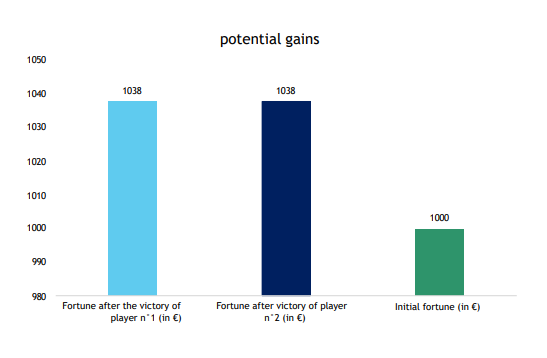
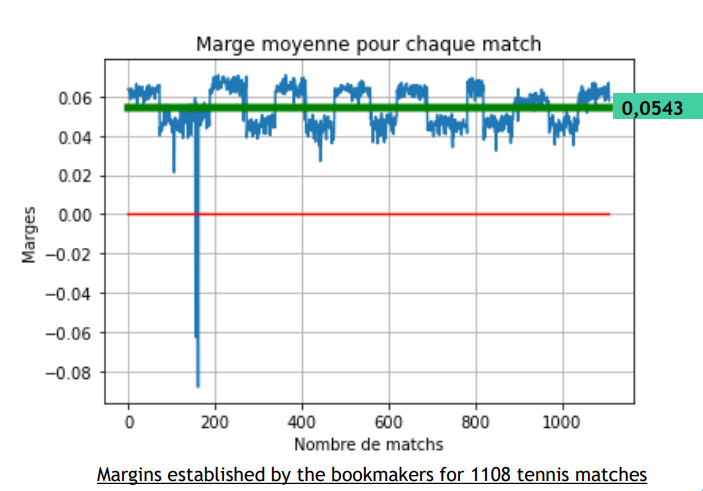
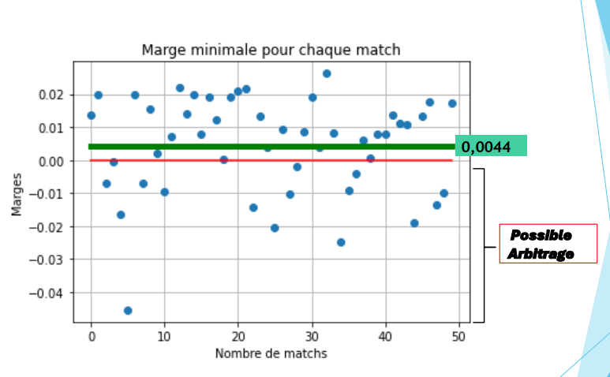

Sports Betting Arbitrage Strategy (TIPE)
A statistical and algorithmic study on "Surebets", combining Web Scraping, Martingale theory, and Financial Arbitrage modeling.
1. The Arbitrage Concept & Mathematical Model
The core of this project investigates the possibility of generating risk-free profits by exploiting odds discrepancies between different bookmakers. This technique, known as Arbitrage Betting or "Surebet", relies on the following inequality:
$$ \frac{1}{O_1} + \frac{1}{O_2} < 1 $$
Where 01and 02 are the highest odds available on the market for a binary outcome (e.g., Tennis). By distributing the stakes inversely proportional to the odds, we can mathematically guarantee a profit regardless of the match outcome, effectively neutralizing the bookmaker's margin.


2. Web Scraping Architecture & Data Parsing
To test this model, I developed a Python-based scraping pipeline to collect real-time odds from major bookmakers (OddsPortal, ATP Tour).
Technical Stack:
• Selenium: For browser automation and handling dynamic JavaScript content.
• BeautifulSoup (bs4): For parsing HTML structure and extracting specific odds containers.
• JSON: For structured data storage and filtering.
The analysis of over 1100 matches revealed an average bookmaker margin of 5.43% (see graph), confirming that the market is generally efficient and weighted against the bettor.
3. Statistical Analysis & Martingale Theory
Beyond simple arbitrage, I analyzed the betting process as a stochastic process (Random Walk). Using Martingale theory and Doob's Optional Stopping Theorem, I modeled the evolution of a bettor's bankroll.
Key Findings:
The scraping algorithm successfully identified "negative margin" events. As shown in the graph, specific matches exhibited a margin as low as 0.0044 (and occasionally negative), creating a theoretical arbitrage window.
However, the asymptotic analysis (Kolmogorov's Law of Large Numbers) demonstrates that while short-term arbitrage is possible, practical limitations (account freezing, betting limits) make it a complex strategy to scale.
